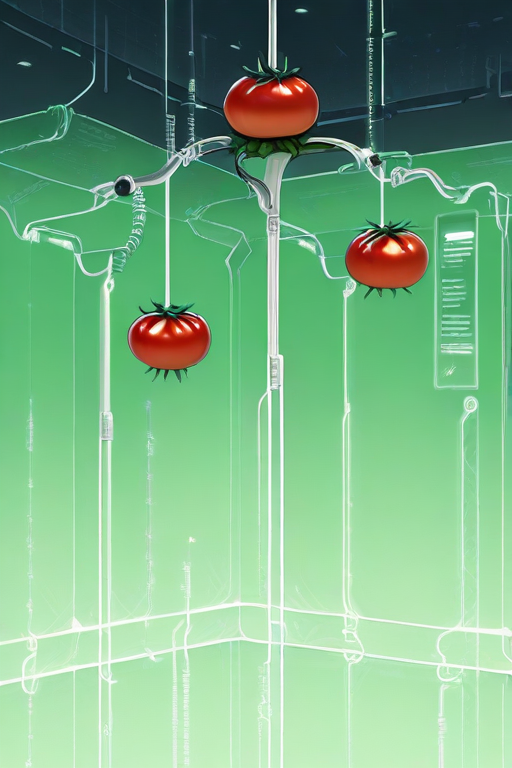

Information:

You might think our tomato garden has real people. Wrong! We believe real people might make mistakes, but machines have a very low error rate, so our tomato garden uses the latest technology for automated irrigation, pest control, and harvesting. The only personnel in the entire tomato garden are lab staff.
Besides that, if you're interested in joining us, please email or call us. We also sincerely thank our partners and friends. We hope to lead the vegetable market into a better tomorrow.
In addition, we are involved in many other fields. Other farms are individual and not a unified system, while we are committed to developing tomatoes to their fullest potential.
We also suggest you visit the potato farm. Potato Farm